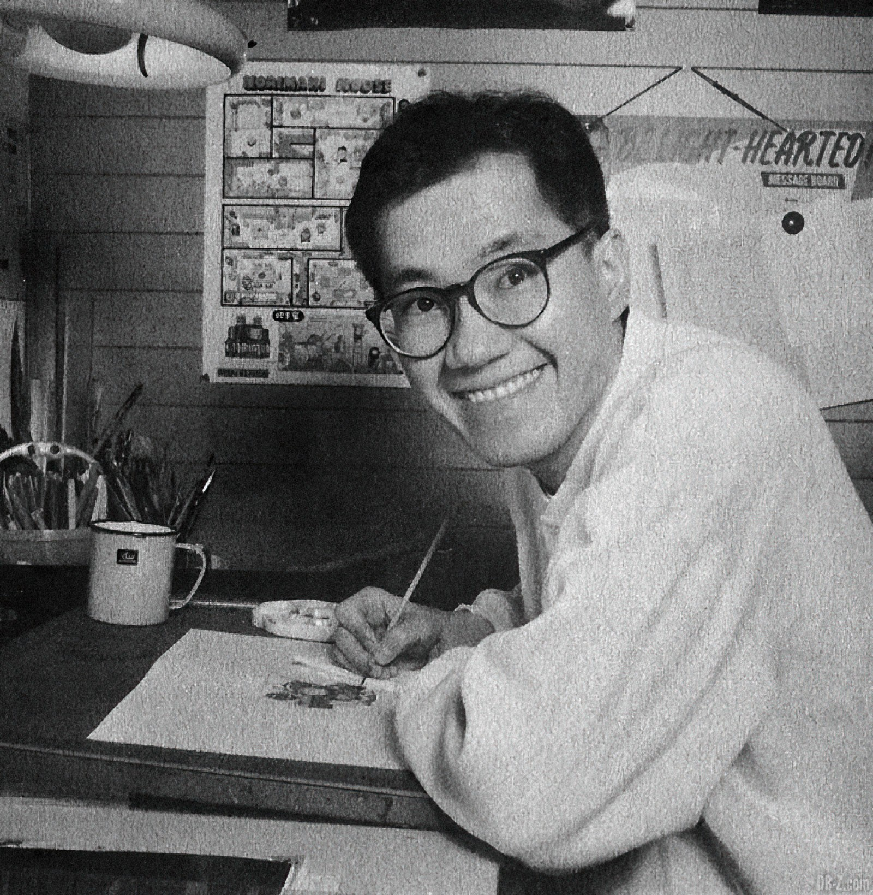

Adeus Akira
Dia 1 de Março, prestamos homenagem a Akira Toriyama, o brilhante criador por trás do icônico Dragon Ball. Sua jornada artística e criativa deixou uma marca indelével na cultura pop e no coração de milhões de fãs em todo o mundo.
🌟 Akira Toriyama: O Mestre das Esferas do Dragão 🌟
Em um canto silencioso do universo, nasceu um visionário. Akira Toriyama, com sua caneta mágica, esculpiu mundos vibrantes e personagens que transcendem o tempo. Vamos celebrar sua vida e legado:
Dr. Slump: Antes das esferas do dragão, havia Dr. Slump. Uma comédia maluca, onde robôs, cientistas e pinguins dançavam juntos. Toriyama nos ensinou que a imaginação não tem limites.
Goku e suas Aventuras: Com um traço ágil, ele nos apresentou Goku, o herói destemido com um apetite insaciável. De lutas épicas a momentos de pura inocência, Goku se tornou um ícone. As Esferas do Dragão: Sete esferas mágicas, desejos concedidos. Quem poderia resistir a essa busca? Toriyama nos levou a voar em nuvens douradas e a enfrentar vilões cósmicos. E, claro, Kamehameha! Vegeta, Bulma, Piccolo e mais: Cada personagem era uma estrela em seu próprio céu. Vegeta, o príncipe orgulhoso; Bulma, a cientista destemida; Piccolo, o guerreiro solitário. Todos eles ganharam vida pelas mãos de Toriyama.
O Legado Eterno: Akira Toriyama não apenas criou mangás e animes. Ele forjou amizades, inspirou sonhos e nos mostrou que a aventura está em cada esquina. Sua influência é como uma onda que continua a se espalhar.
Hoje, enquanto olhamos para o céu, imaginamos Shenlong pairando sobre nós. E em nossos corações, as palavras de Toriyama ecoam: “Nunca pare de sonhar. Nunca pare de criar.”
Akira Toriyama, você partiu, mas sua magia permanece. Obrigado por nos levar a voar, por nos fazer rir e por nos ensinar que, mesmo em um mundo de ficção, há verdade e beleza.
Arigatou gozaimasu, sensei! 🙏🐉✨